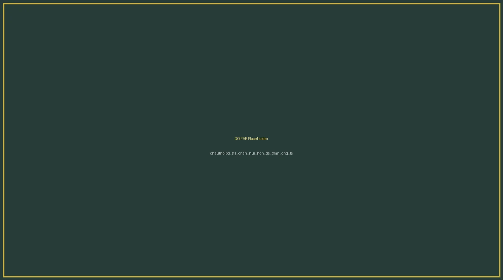

🧭 1. Tổng Quan Châu Thới Sơn Tự & Cổ Tự Trên Đỉnh Núi Bình Dương
Theo sử liệu Phật giáo địa phương, chùa được Thiền sư Khánh Long khai sơn vào năm 1612 trên đỉnh ngọn núi đất đỏ Châu Thới. Trải qua nhiều thế kỷ trùng tu và phát triển, chùa hiện bảo lưu được nhiều di vật cổ quý giá: bộ Thập bát La Hán đất nung cổ (18 vị), bộ Thập điện Diêm vương bằng đất nung từ thế kỷ XVII–XVIII, và các pho tượng Phật cổ bằng đá cuối thế kỷ XVII — những chứng tích sống động của nghệ thuật điêu khắc tôn giáo Nam Bộ giai đoạn khai hoang lập địa.
Ngày 21/4/1989, Chùa Châu Thới chính thức được Bộ Văn hóa công nhận là Di tích lịch sử-văn hóa và Danh lam thắng cảnh cấp Quốc gia (Quyết định số 38/VH-QD). Điểm khác biệt hoàn toàn với các chùa trên mặt bằng là hành trình chiêm bái phải leo 220 bậc đá dốc đứng lên đỉnh núi — một cuộc tu hành nhỏ trong chính bước chân, rèn tâm kiên nhẫn trước khi vào chánh điện. Từ đỉnh núi, hành giả được hưởng trọn cảnh quan đồng bằng Bình Dương – Đồng Nai rộng lớn trải dài tới chân trời.
📜 2. Nghi Thức Hành Lễ & Chinh Phục 220 Bậc Đá Núi Châu Thới
Chùa Châu Thới có địa hình đặc biệt trên đỉnh núi. Hành giả cần chuẩn bị thể lực và tâm thế phù hợp cho chuyến hành hương leo núi chiêm bái:
🏮 3 Quy Chuẩn Văn Minh Khi Hành Hương Châu Thới Sơn
⛰️ An Toàn & Sức Khỏe Khi Leo 220 Bậc Đá
Leo 220 bậc đá dốc đứng cần sức khỏe tốt: mang giày bệt chống trơn, uống đủ nước và nghỉ giải lao nếu mệt. Người cao tuổi, phụ nữ mang thai và trẻ nhỏ nên tham khảo ý kiến sức khỏe; có thể dừng nghỉ bất cứ lúc nào tại các am thờ giữa chừng núi.
🏺 Bảo Vệ Tượng Cổ Đất Nung Thế Kỷ XVII-XVIII
Các tượng La Hán và Thập điện Diêm vương bằng đất nung cổ cực kỳ dễ vỡ và mất màu: tuyệt đối không chạm tay, không dùng vật cứng gõ vào tượng. Chỉ chiêm bái bằng mắt từ khoảng cách quy định và chắp tay đảnh lễ.
🌿 Giữ Gìn Sinh Thái Núi Châu Thới
Không bẻ cành, hái hoa hay bắt côn trùng trên đường lên núi. Không xả rác trên bậc đá và vườn chùa. Rừng cây cổ thụ trên sườn núi là lá phổi xanh quý báu của TP. Dĩ An cần được bảo tồn.
⛩️ 3. Lộ Trình 6 Trạm Châu Thới Sơn & Hành Hương Leo Núi Độc Đáo
Lộ trình 6 trạm đặc biệt bắt đầu từ chân núi với Hòn đá thần Ông Tà huyền bí, leo từng bậc đá qua am thờ giữa chừng, lên đến chánh điện mái gốm sứ rồng phượng 1612, chiêm bái La Hán đất nung cổ, vườn tháp đỉnh núi và kết thúc bằng cảnh quan đồng bằng bao la hồi hướng viên mãn.
Hành Trình Chiêm Bái Chùa Châu Thới — Cổ Tự 1612 Trên Đỉnh Núi
Leo 220 bậc đá chinh phục núi Châu Thới, chiêm bái cổ tự hơn 400 năm tuổi với mái gốm sứ rồng phượng độc đáo và phóng tầm mắt ngắm đồng bằng Bình Dương – Đồng Nai từ đỉnh núi linh thiêng.

Tại chân núi Châu Thới, trước khi đặt chân lên 220 bậc đá dốc đứng, hành giả dừng lại trước Hòn đá thần — tương truyền là Ông Tà (thần đá theo tín ngưỡng dân gian Nam Bộ) gìn giữ lối lên núi, che chở cho người hành hương và dân làng quanh núi từ bao đời.
🪨 Hòn Đá Thần Ông Tà & Tín Ngưỡng Dân Gian Nam Bộ
- Tín ngưỡng thờ Ông Tà (hay Thần Đá, Neak Tà) là tín ngưỡng dân gian phổ biến của người Khmer, Chăm và người Việt vùng Nam Bộ — linh thạch tự nhiên được xem là hiện thân của thần linh bảo hộ đất đai.
- Người dân địa phương thường dâng hương hoa, trái cây và xin phép Ông Tà trước khi lên núi — một nghi lễ giao hòa giữa đức tin Phật giáo và tín ngưỡng bản địa Nam Bộ độc đáo.
- Mang giày bệt hoặc dép quai hậu chống trơn khi leo; mùa mưa bậc đá trơn, cần đặc biệt cẩn thận.
⛰️ Thông Tin Leo Núi Châu Thới
- Núi Châu Thới cao 82m so với mặt biển; 220 bậc đá được xây dựng dọc theo sườn núi dẫn thẳng lên chánh điện.
- Thời gian leo trung bình: 15–25 phút (người khỏe), 30–40 phút (người bình thường với dừng nghỉ).
- Nên leo lên sớm buổi sáng (trước 9h) để tránh nắng gắt và tận hưởng không khí trong lành mát mẻ của núi.
CHỨNG NHẬN CHIÊM BÁI CHÂU THỚI SƠN TỰ VIÊN MÃN
Chúc mừng bạn đã hoàn thành trọn vẹn lộ trình chiêm bái 6 trạm tại Di tích Quốc gia Chùa Châu Thới — cổ tự hơn 400 năm tuổi trên đỉnh núi Châu Thới. Nguyện cầu mười phương Chư Phật gia hộ thân tâm an lạc, bước chân kiên định trên đường đời như bậc đá kiên trung núi Châu Thới.
🧭 4. Lịch Trình 1 Ngày Núi Châu Thới — Chùa Cổ 1612 & Danh Thắng Dĩ An
Hành trình 1 ngày kết hợp chiêm bái Chùa Châu Thới với khám phá các danh thắng và ẩm thực đặc sản miền Đông Nam Bộ tại Bình Dương – Dĩ An (cách TP.HCM khoảng 25–30km, di chuyển khoảng 45 phút):
Buổi Sáng (06h30 – 10h30): Leo Núi Châu Thới & Chiêm Bái Cổ Tự 1612
- 06h30: Xuất phát từ TP.HCM theo hướng Bình Dương đến chân núi Châu Thới, phường Bình An, TP. Dĩ An.
- 07h15: Lễ Hòn đá thần Ông Tà tại chân núi, bắt đầu leo 220 bậc đá dốc — nghỉ tại am thờ giữa chừng ngắm cây cổ thụ linh mộc.
- 08h30: Đến chánh điện Châu Thới Sơn Tự, chiêm bái mái gốm sứ rồng phượng độc đáo, lễ Phật và chiêm bái bộ Thập bát La Hán đất nung cổ, vườn tháp đỉnh núi và phóng tầm mắt ra đồng bằng Bình Dương – Đồng Nai.
Buổi Trưa (11h00 – 13h30): Thưởng Thức Đặc Sản Miền Đông & Nghỉ Ngơi
Dùng bữa trưa tại các quán ăn gần chân núi Châu Thới hoặc khu vực TP. Dĩ An với các món đặc sản miền Đông Nam Bộ: gà nướng mọi, cơm tấm sườn bì, bún bò Huế hay các món chay truyền thống; uống nước mía, trà đá hay cà phê sữa đá Bình Dương.
Buổi Chiều (14h00 – 17h30): Khám Phá Làng Gốm Lái Thiêu & Trở Về
- 14h00: Di chuyển sang Làng gốm sứ Lái Thiêu (Thuận An, Bình Dương) — trung tâm gốm sứ lớn nhất miền Nam với hàng trăm cơ sở sản xuất gốm thủ công và gốm nghệ thuật đặc sắc.
- 15h30: Ghé thăm Nhà cổ Trần Văn Hổ hoặc tham quan Bảo tàng tỉnh Bình Dương tìm hiểu văn hóa người Hoa và lịch sử vùng đất miền Đông trước khi về TP.HCM.